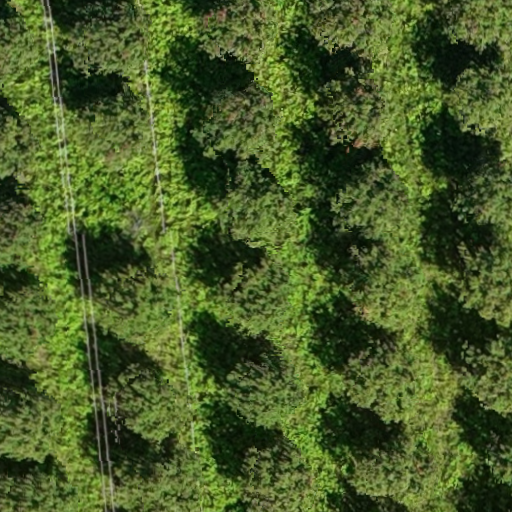
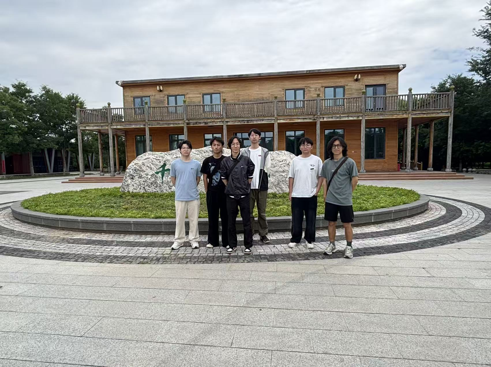
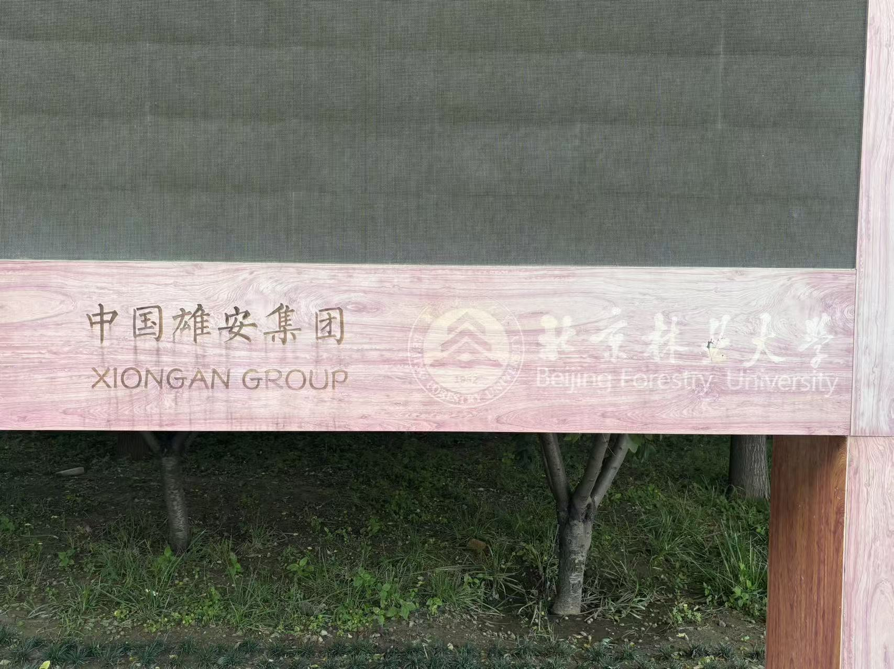
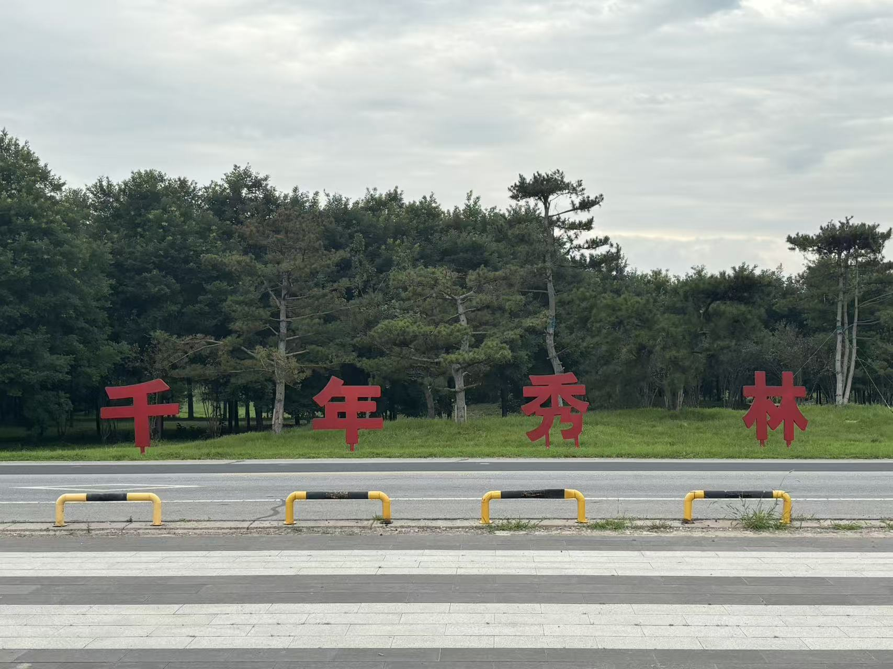

01
规
PLANNER
IMAGE INPUT / 01
选择场景、说明关注重点，然后启动协同分析。
支持 JPG、JPEG、PNG 与 WEBP 图片。系统将结合视觉感知和林草知识库，生成真实执行轨迹与最终分析报告。

上传林草场景图片后，系统将在此展示智能分析结果。
AGENT WORKFLOW / 02
真实工作流角色协同，把场景输入转化为可复核报告。
以下角色对应当前 LangGraph 工作流。角色卡展示系统职责，Timeline 展示本次分析实际发生的事件。
PLANNER
EXECUTOR
VISION EXPERT
KNOWLEDGE EXPERT
CRITIC
FINALIZER
等待分析任务 · 真实 Agent 事件将在运行后显示
ANALYSIS STATUS / 03
实时了解当前多智能体协同分析进度与结果状态。
分析前保持空状态，运行中跟随真实 SSE 更新，完成后请直接查看下方智能分析报告。
上传图片并开始分析后，完整研判结果将在下方报告中展示。
将风险结果转化为能够落地的现场核查、日常巡护与长期治理动作。
REPORT / 05
汇总真实协同分析结果，形成可复核的智能分析报告。
报告区域只展示当前任务产生的真实 `final_report`，支持屏幕阅读、导出与人工复核。
当前场景：密林 + 纵向线状设施
分析结果支持人工复核与现场核查，建议结合多时相遥感、地面调查等信息进行综合研判。PRACTICE OUTCOMES / 06
从影像研判到现场考察，让智能分析落回真实场景。
四组实地影像记录实践过程：团队现场、联合实践标识、千年秀林与林间样区，与 6 组无人机影像共同构成从空中观测到地面核查的完整素材链。

实地观察与影像素材采集，为生态分析与场景核查提供现场支撑。


无人机影像 + 实地照片
解析 / 植被 / 风险 / 治理 / 报告
可运行、可截图、可演示
PPT / 公众号 / 结项展示